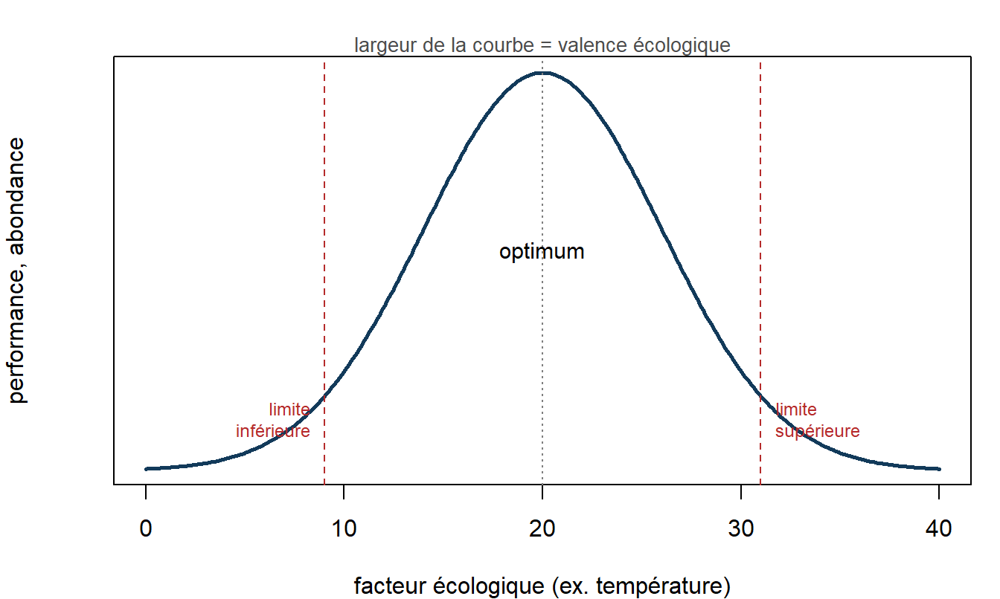
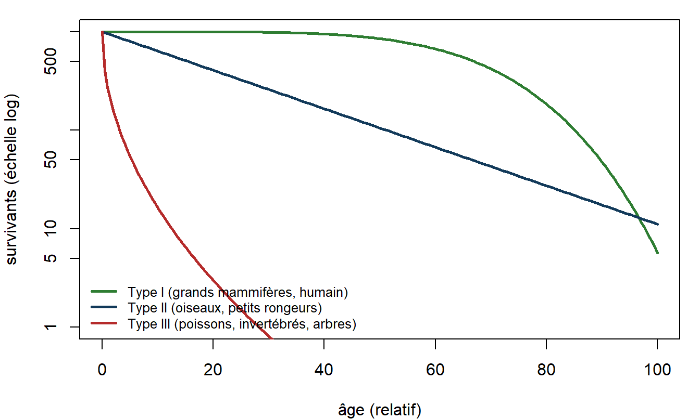
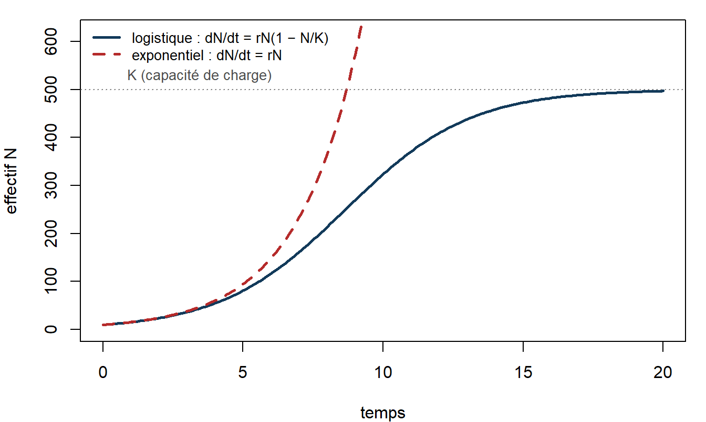
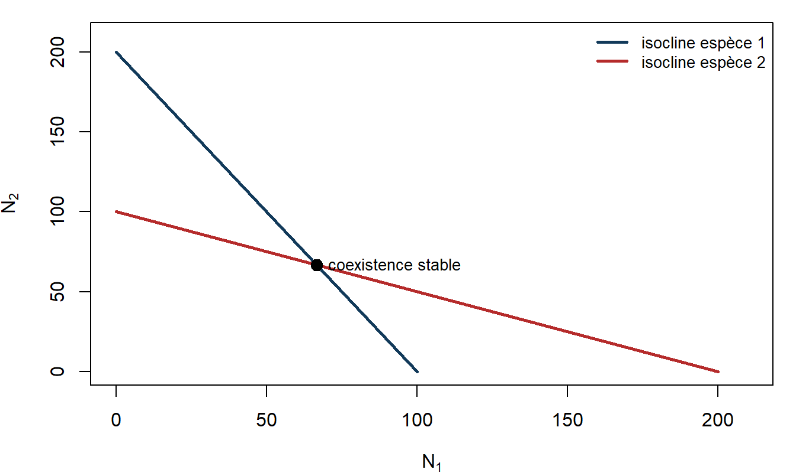
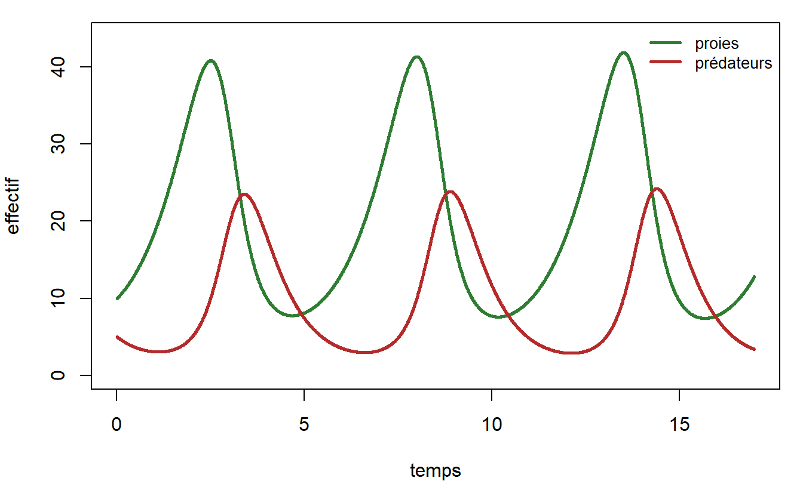
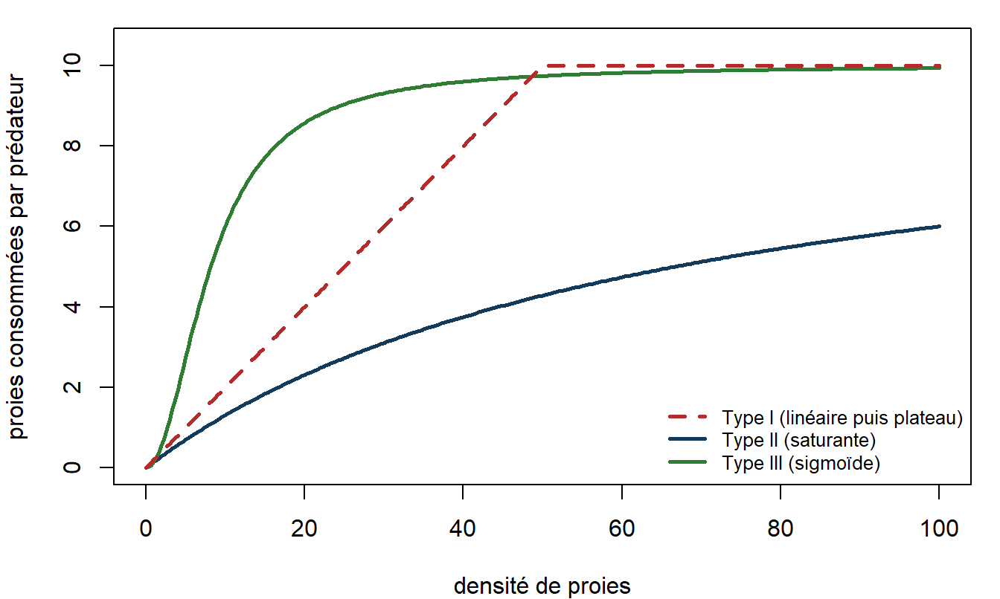
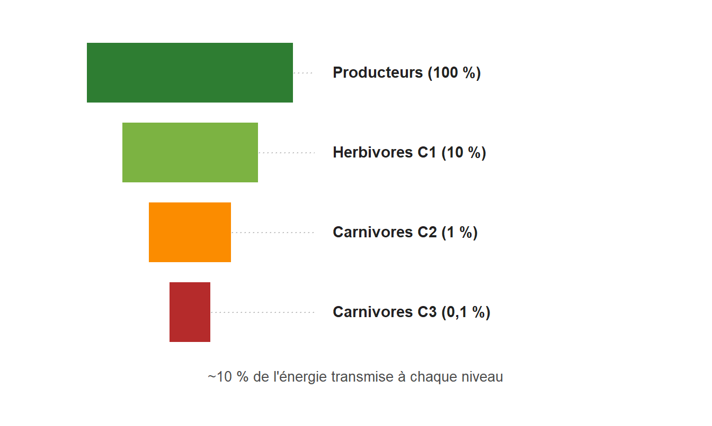

Écologie générale
Cours L1/L2 : des facteurs du milieu aux écosystèmes
NoteComment utiliser ce cours
Ce cours couvre le programme d’écologie générale de première et deuxième année. Il est prévu pour environ quatre à cinq heures d’enseignement. Chaque partie définit ses termes, illustre les notions par des études réelles signalées dans des encadrés, et se referme sur un « À retenir ». Les figures quantitatives (croissance, survie, proie-prédateur) sont produites par le code du document. Les références complètes sont rassemblées à la fin.
1 Qu’est-ce que l’écologie ?
L’écologie est la science qui étudie les relations des êtres vivants entre eux et avec leur milieu. Le terme est forgé par le zoologiste allemand Ernst Haeckel en 1866, à partir du grec oikos (la maison) et logos (le discours) : littéralement, la science de l’habitat. Il ne faut pas la confondre avec l’écologisme, qui est un mouvement politique et social ; l’écologie est une discipline scientifique.
1.1 Les niveaux d’organisation du vivant
L’écologie s’intéresse à plusieurs niveaux emboîtés, de l’individu à la planète.
| Niveau | Définition |
|---|---|
| Organisme | un individu, unité de base |
| Population | l’ensemble des individus d’une même espèce, en un lieu et un temps donnés |
| Communauté (biocénose) | l’ensemble des populations qui coexistent dans un même milieu |
| Écosystème | la communauté et son milieu physique, reliés par des flux d’énergie et de matière |
| Biome | un grand type d’écosystème à l’échelle continentale (forêt tropicale, toundra…) |
| Biosphère | l’ensemble des zones de la planète où la vie est présente |
On distingue traditionnellement l’autécologie (un organisme ou une espèce face à son milieu), la démécologie (les populations) et la synécologie (les communautés et les écosystèmes).
1.2 Biotope, biocénose et écosystème
Le biotope est le milieu physique, avec ses caractéristiques abiotiques (climat, sol, eau). La biocénose est l’ensemble des êtres vivants qui l’occupent ; le terme est introduit par Karl Möbius en 1877 à propos des bancs d’huîtres. Leur réunion forme l’écosystème, notion nommée par Arthur Tansley en 1935, qui insiste sur le fait que le vivant et son milieu forment un système traversé par des échanges.
On sépare les facteurs abiotiques (non vivants : température, lumière, eau, sol, salinité) des facteurs biotiques (liés aux autres êtres vivants : compétition, prédation, symbioses).
NoteÀ retenir
L’écologie étudie les interactions du vivant avec son milieu, à des niveaux emboîtés de l’organisme à la biosphère. L’écosystème réunit une biocénose (le vivant) et un biotope (le milieu physique), reliés par des flux d’énergie et de matière.
2 L’organisme et son milieu
2.1 Les facteurs abiotiques et le facteur limitant
Chaque espèce ne peut vivre que dans une certaine gamme de conditions. Deux lois classiques encadrent cette idée. La loi du minimum, énoncée par Justus von Liebig en 1840, dit que la croissance est limitée par la ressource la plus rare par rapport aux besoins, et non par la somme des ressources. La loi de tolérance, formulée par Victor Shelford en 1913, ajoute qu’un facteur peut être limitant aussi bien par excès que par défaut : chaque espèce a un optimum et des limites de tolérance.
La largeur de cette tolérance est la valence écologique. Une espèce à valence étroite est dite sténoèce (peu tolérante, exigeante) ; à valence large, euryèce (tolérante, généraliste). Les préfixes se combinent avec le facteur : sténotherme ou eurytherme pour la température, sténohalin ou euryhalin pour la salinité. Le facteur qui, à un moment donné, contraint le plus l’espèce est le facteur limitant.
2.2 La niche écologique
L’habitat est l’adresse d’une espèce, le lieu où on la trouve. La niche écologique est son métier : l’ensemble des conditions et des ressources qui lui permettent de vivre et de se reproduire. La notion s’est précisée en plusieurs temps : Joseph Grinnell (1917) en donne une vision spatiale, Charles Elton (1927) une vision fonctionnelle (la place dans le réseau trophique), et George Evelyn Hutchinson (1957) une définition formelle, la niche comme un hypervolume à n dimensions, chaque dimension étant un facteur écologique.
Hutchinson distingue la niche fondamentale, celle que l’espèce pourrait occuper en l’absence d’ennemis et de concurrents, de la niche réalisée, plus étroite, effectivement occupée une fois prises en compte les interactions, notamment la compétition.
AstuceÉtude : Connell (1961) et la niche réalisée
Sur les côtes rocheuses d’Écosse, Joseph Connell a montré que la balane Chthamalus peut survivre haut et bas sur l’estran (niche fondamentale large), mais qu’en présence de la balane concurrente Balanus, plus compétitive dans la zone basse, elle est reléguée à la zone haute (niche réalisée réduite). En retirant expérimentalement Balanus, Chthamalus réoccupait le bas de l’estran. C’est une démonstration expérimentale de la différence entre niche fondamentale et niche réalisée.
NoteÀ retenir
Chaque espèce vit dans une gamme de conditions bornée par un optimum et des limites (loi de tolérance), et sa distribution est souvent fixée par un facteur limitant (loi du minimum). La niche écologique, hypervolume à n dimensions, se décline en niche fondamentale (potentielle) et niche réalisée (effective, réduite par les interactions).
3 L’écologie des populations
3.1 Décrire une population
Une population se caractérise par son effectif (nombre d’individus), sa densité (effectif par unité de surface ou de volume), sa distribution spatiale (aléatoire, agrégée ou régulière) et sa structure d’âge. La distribution la plus fréquente dans la nature est l’agrégation, car les ressources et les milieux favorables sont eux-mêmes répartis en taches.
3.2 Démographie et courbes de survie
La dynamique d’une population résulte de quatre processus : natalité et immigration l’augmentent, mortalité et émigration la diminuent. Les tables de vie suivent le devenir d’une cohorte et permettent de tracer une courbe de survie, qui prend trois formes typiques.

Le type I (convexe) correspond aux espèces qui protègent peu de descendants mais longtemps, avec une mortalité concentrée sur les vieux individus. Le type II (rectiligne) traduit une probabilité de mourir constante avec l’âge. Le type III (concave) est celui des espèces produisant énormément de descendants dont la plupart meurent tôt.
3.2.1 La table de vie et le taux de reproduction
Une table de vie (Deevey 1947) suit une cohorte et croise survie et reproduction. Pour chaque classe d’âge \(x\), on note l’effectif survivant \(n_x\), la survie \(l_x = n_x/n_0\), les décès \(d_x\), le taux de mortalité \(q_x = d_x/n_x\), et la fécondité \(m_x\) (descendants femelles par femelle de la classe).
| \(x\) | \(n_x\) | \(l_x\) | \(d_x\) | \(q_x\) | \(m_x\) | \(l_x\,m_x\) |
|---|---|---|---|---|---|---|
| 0 | 1000 | 1,00 | 200 | 0,20 | 0 | 0 |
| 1 | 800 | 0,80 | 300 | 0,375 | 0 | 0 |
| 2 | 500 | 0,50 | 200 | 0,40 | 2 | 1,00 |
| 3 | 300 | 0,30 | 200 | 0,667 | 3 | 0,90 |
| 4 | 100 | 0,10 | 100 | 1,00 | 1 | 0,10 |
| 5 | 0 | 0,00 | - | - | 0 | 0 |
On en tire trois quantités clés. Le taux net de reproduction \(R_0 = \sum_x l_x m_x = 2{,}0\) : chaque individu est remplacé en moyenne par deux à la génération suivante. Si \(R_0 > 1\) la population croît, si \(R_0 = 1\) elle est stable, si \(R_0 < 1\) elle décline. Le temps de génération vaut \(T = \left(\sum_x x\, l_x m_x\right) / R_0 = 5{,}1 / 2{,}0 \approx 2{,}55\). Enfin, le taux d’accroissement s’approxime par \(r \approx \ln(R_0)/T \approx \ln 2 / 2{,}55 \approx 0{,}27\) par unité de temps, ce qui relie la démographie détaillée aux modèles de croissance ci-dessous.
3.3 Les modèles de croissance
En ressources illimitées, une population croît de façon exponentielle : sa vitesse d’accroissement est proportionnelle à son effectif, \[\frac{dN}{dt} = rN,\] où \(r\) est le taux d’accroissement intrinsèque. La croissance est alors en J, sans frein. Ce régime n’est jamais durable : les ressources s’épuisent. Le modèle logistique introduit une capacité de charge \(K\), l’effectif maximal que le milieu peut soutenir, \[\frac{dN}{dt} = rN\left(1 - \frac{N}{K}\right).\] La croissance ralentit à l’approche de \(K\) et la courbe prend une forme en S (sigmoïde).

Le ralentissement logistique traduit la densité-dépendance : quand la densité augmente, la compétition pour les ressources fait baisser la natalité et monter la mortalité, ce qui régule la population. Certains facteurs, au contraire, sont densité-indépendants (un gel, un incendie frappent la même proportion quelle que soit la densité). À l’inverse, à très faible densité, une population peut souffrir d’un effet Allee : trouver un partenaire, se défendre en groupe ou exploiter le milieu devient difficile, si bien que le taux d’accroissement chute et peut devenir négatif sous un seuil critique, entraînant la population vers l’extinction.
3.4 Stratégies r et K
De ces modèles découle une opposition classique, formalisée par Robert MacArthur et Edward Wilson puis par Eric Pianka (1970), entre deux stratégies démographiques.
| Stratégie r | Stratégie K |
|---|---|
| fort taux d’accroissement | effectif proche de K |
| beaucoup de petits descendants | peu de descendants, bien soignés |
| maturité précoce, vie courte | maturité tardive, vie longue |
| peu de soins parentaux | soins parentaux importants |
| milieux instables, colonisateurs | milieux stables, compétiteurs |
| courbe de survie type III | courbe de survie type I |
Ce sont deux extrêmes d’un continuum : la plupart des espèces se situent entre les deux. On distingue par ailleurs les espèces sémelpares, qui se reproduisent une seule fois avant de mourir (saumons, plantes annuelles, agaves), des espèces itéropares, qui se reproduisent plusieurs fois au cours de leur vie.
3.5 Cycles et métapopulations
Certaines populations montrent des oscillations régulières, comme le cycle d’abondance du lièvre variable et du lynx au Canada, reconstitué à partir des registres de fourrures de la Compagnie de la Baie d’Hudson et analysé par Charles Elton. Enfin, une espèce occupe rarement un espace continu : elle forme souvent une métapopulation, un réseau de populations locales reliées par la dispersion, avec des extinctions et des recolonisations locales, concept introduit par Richard Levins (1969).
NoteÀ retenir
Une population se décrit par sa densité, sa distribution et sa structure d’âge, et évolue sous l’effet de la natalité, de la mortalité et des migrations. Sa croissance est exponentielle en ressources illimitées, logistique quand la capacité de charge K la freine par densité-dépendance. Les stratégies r et K opposent colonisateurs prolifiques et compétiteurs longévifs.
4 Les interactions entre espèces
4.1 Une typologie par les effets
On classe les interactions selon leur effet, positif (+), négatif (−) ou nul (0), sur chacun des deux partenaires.
| Interaction | Espèce 1 | Espèce 2 |
|---|---|---|
| Compétition | − | − |
| Exploitation (prédation, herbivorie, parasitisme) | + | − |
| Mutualisme | + | + |
| Commensalisme | + | 0 |
| Amensalisme | − | 0 |
| Neutralisme | 0 | 0 |
Cette typologie est exhaustive : elle énumère toutes les combinaisons de signes possibles pour deux espèces. Ces signes restent toutefois une simplification, car le bilan d’une interaction n’est pas figé : il se déplace le long d’un continuum selon le contexte. L’exemple type est fongique : une association mycorhizienne peut glisser du mutualisme au parasitisme selon la disponibilité en nutriments, l’âge de la plante ou l’identité des partenaires (Johnson, Graham & Smith 1997 ; Bronstein 1994).
4.2 La compétition et l’exclusion compétitive
La compétition oppose des individus qui exploitent une même ressource limitée. Le principe d’exclusion compétitive énonce que deux espèces occupant exactement la même niche ne peuvent coexister durablement : l’une élimine l’autre.
AstuceÉtude : Gause (1934) et le principe d’exclusion
Georgy Gause a cultivé deux protozoaires ciliés, Paramecium aurelia et Paramecium caudatum. Chacun prospérait seul, mais mis ensemble sur la même ressource, P. aurelia finissait toujours par éliminer P. caudatum. En revanche, P. caudatum et P. bursaria, qui exploitaient des ressources différentes dans le tube, coexistaient. C’est l’appui expérimental du principe d’exclusion compétitive.
Comment expliquer alors la coexistence de tant d’espèces ? Par le partage des ressources (ou différenciation de niche) : les espèces coexistent en exploitant des ressources ou des micro-habitats différents.
AstuceÉtude : MacArthur (1958) et le partage des ressources
Robert MacArthur a observé cinq espèces de fauvettes (parulines) se nourrissant dans les mêmes épicéas. Plutôt que de se concurrencer frontalement, chacune exploitait préférentiellement une zone différente de l’arbre (cime, branches externes, tronc…). Ce partage de l’espace de recherche de nourriture permettait leur coexistence, illustrant la différenciation de niche.
4.2.1 Modéliser la compétition
Le modèle de compétition de Lotka-Volterra étend la logistique à deux espèces : chacune freine sa propre croissance et celle de l’autre, cette dernière pondérée par un coefficient de compétition, \[\frac{dN_1}{dt} = r_1 N_1\,\frac{K_1 - N_1 - \alpha_{12} N_2}{K_1}, \qquad \frac{dN_2}{dt} = r_2 N_2\,\frac{K_2 - N_2 - \alpha_{21} N_1}{K_2}.\] Le coefficient \(\alpha_{12}\) mesure l’effet d’un individu de l’espèce 2 sur l’espèce 1, en équivalents d’individus de l’espèce 1. En annulant chaque vitesse, on trace la droite d’équilibre (isocline) de chaque espèce ; leur position relative détermine quatre issues : l’espèce 1 exclut l’espèce 2 ; l’espèce 2 exclut l’espèce 1 ; exclusion dépendant des conditions initiales (équilibre instable) ; ou coexistence stable, quand chaque espèce se limite plus elle-même qu’elle ne limite l’autre.

4.3 La prédation et les oscillations
La prédation relie un prédateur et sa proie. Le modèle de Lotka et Volterra (1925-1926) montre que ce couplage engendre des oscillations décalées : les proies augmentent, les prédateurs suivent, font chuter les proies, puis déclinent à leur tour, ce qui permet aux proies de repartir.

La quantité de proies capturées par prédateur en fonction de la densité de proies est la réponse fonctionnelle, dont Crawford Holling (1959) a décrit trois types.

Prédateurs et proies exercent l’un sur l’autre une pression sélective : c’est la coévolution, une « course aux armements » qui affûte défenses (camouflage, toxines, épines) et moyens d’attaque.
4.4 Parasitisme, herbivorie et symbioses
Le parasitisme est une prédation lente : le parasite exploite son hôte sans le tuer immédiatement (les parasitoïdes, eux, finissent par le tuer). L’herbivorie est la consommation de végétaux. À l’opposé, le mutualisme bénéficie aux deux partenaires. Le mot symbiose demande une précaution : dans son sens d’origine (de Bary 1879), il désigne toute « vie en commun » durable entre organismes différents, quel qu’en soit le bilan, et englobe donc aussi bien le mutualisme que le commensalisme et le parasitisme ; dans l’usage courant, il est souvent restreint au mutualisme intime et obligatoire. Au sens strict, un parasite est donc lui aussi un symbiote. Les exemples structurants abondent : les mycorhizes (champignons et racines), les lichens (champignon et algue ou cyanobactérie), la pollinisation (plantes et insectes), ou les coraux et leurs zooxanthelles. Le commensalisme profite à l’un sans nuire à l’autre.
NoteÀ retenir
Les interactions se classent par leurs effets : compétition (−/−), prédation et parasitisme (+/−), mutualisme (+/+), commensalisme (+/0). Deux espèces de niche identique s’excluent (Gause) ; la coexistence passe par le partage des ressources (MacArthur). La prédation engendre des oscillations couplées (Lotka-Volterra) et nourrit la coévolution.
5 L’écologie des communautés
5.1 Décrire une communauté : la biodiversité
Une communauté (ou biocénose) se décrit par sa composition en espèces et par sa biodiversité. Celle-ci a deux composantes : la richesse spécifique (le nombre d’espèces) et l’équitabilité (la régularité des abondances entre espèces). Deux relevés de même richesse peuvent différer : l’un dominé par une seule espèce, l’autre équilibré. On les résume par des indices de diversité.
L’indice de Shannon se calcule à partir des proportions \(p_i\) de chaque espèce : \[H' = -\sum_i p_i \ln p_i.\] Il est nul si une seule espèce domine, et maximal (\(\ln S\)) si toutes les espèces sont également abondantes. L’équitabilité de Piélou \(J = H'/\ln S\) ramène cette valeur entre 0 et 1. L’indice de Simpson \(D = \sum_i p_i^2\) est la probabilité que deux individus tirés au hasard appartiennent à la même espèce ; on l’exprime souvent en diversité par \(1 - D\).
Comparons deux communautés de quatre espèces et cent individus, de même richesse mais d’équitabilité différente :
| Communauté | Abondances | \(H'\) | \(J\) | \(1-D\) |
|---|---|---|---|---|
| A (équilibrée) | 25, 25, 25, 25 | 1,39 | 1,00 | 0,75 |
| B (déséquilibrée) | 85, 5, 5, 5 | 0,59 | 0,42 | 0,27 |
Les deux ont la même richesse, mais la communauté A, équitable, est bien plus diverse que la B, dominée par une espèce : la richesse seule ne suffit pas à décrire la biodiversité. On distingue enfin la diversité locale (alpha), la diversité entre milieux (bêta) et la diversité régionale (gamma).
5.2 Espèces clés de voûte et ingénieurs
Toutes les espèces n’ont pas le même poids dans une communauté. Une espèce clé de voûte exerce, relativement à son abondance, un effet démesuré sur la structure de la communauté.
AstuceÉtude : Paine (1966) et la notion d’espèce clé de voûte
Sur l’estran rocheux du Pacifique, Robert Paine a retiré l’étoile de mer prédatrice Pisaster ochraceus. En quelques mois, sa proie préférée, une moule, a proliféré et évincé la plupart des autres espèces : la richesse de la communauté s’est effondrée. En contrôlant le compétiteur dominant, le prédateur maintenait la diversité. Paine a nommé ce rôle « espèce clé de voûte ».
AstuceÉtude : Estes & Palmisano (1974) et la cascade trophique
Le long des côtes du Pacifique nord, là où la loutre de mer avait été exterminée, les oursins qu’elle consomme pullulaient et rasaient les forêts de laminaires ; là où la loutre subsistait, les oursins étaient rares et les forêts de laminaires prospères. La loutre contrôle indirectement toute la communauté : c’est une cascade trophique, un effet en chaîne d’un niveau à l’autre.
Une espèce ingénieur modifie physiquement le milieu et crée des habitats (le castor et ses barrages, les coraux bâtisseurs de récifs).
5.3 Réseaux trophiques et contrôle des communautés
Les espèces sont reliées par qui mange qui : les chaînes alimentaires s’entrelacent en réseaux trophiques. On y distingue des niveaux trophiques : producteurs, consommateurs primaires (herbivores), secondaires et tertiaires (carnivores), décomposeurs. Deux forces se disputent le contrôle des communautés : le contrôle ascendant (bottom-up), par la disponibilité des ressources à la base, et le contrôle descendant (top-down), par les prédateurs au sommet. L’hypothèse du « monde vert » de Hairston, Smith et Slobodkin (1960) souligne le rôle des prédateurs : s’ils contrôlent les herbivores, la végétation reste abondante. Les expériences de cascade trophique en lac de Carpenter, Kitchell et Hodgson (1985) ont confirmé la puissance du contrôle descendant.
5.4 La succession écologique
Une communauté n’est pas figée : elle change au cours du temps par succession écologique. La succession primaire part d’un milieu nu et sans sol (coulée de lave, dune, moraine glaciaire) ; la succession secondaire repart d’un milieu déjà colonisé mais perturbé (après un incendie, un abandon de culture). Des espèces pionnières, souvent de stratégie r, préparent le milieu ; des espèces plus compétitives leur succèdent, jusqu’à une communauté relativement stable, longtemps appelée climax.
Deux visions se sont opposées. Frederic Clements (1916) voyait la succession comme le développement quasi déterministe d’un « superorganisme » vers un climax unique fixé par le climat. Henry Gleason (1926) défendait au contraire une vision individualiste : chaque espèce répond pour son compte aux conditions, et les communautés sont des assemblages contingents. La vision de Gleason a largement prévalu. L’une des premières descriptions de succession est due à Henry Cowles (1899) sur les dunes du lac Michigan.
Connell et Slatyer (1977) ont distingué trois mécanismes de remplacement. Par facilitation, les pionnières modifient le milieu et le rendent favorable aux suivantes (lichens et mousses produisant un premier sol). Par tolérance, les espèces tardives s’installent indépendamment et l’emportent lentement parce qu’elles supportent des ressources plus rares. Par inhibition, les espèces en place résistent à leur remplacement tant qu’une perturbation ne les élimine pas.
AstuceÉtude : Connell (1978) et la perturbation intermédiaire
En comparant récifs coralliens et forêts tropicales, Joseph Connell a proposé que la diversité est maximale pour un niveau intermédiaire de perturbation. Trop peu de perturbations laissent les meilleurs compétiteurs monopoliser le milieu ; trop de perturbations n’y laissent survivre que quelques pionnières. Entre les deux, pionnières et compétitrices coexistent, et la diversité culmine.
NoteÀ retenir
La biodiversité combine richesse spécifique et équitabilité. Certaines espèces pèsent plus que d’autres : clés de voûte (Paine) et ingénieurs. Les communautés sont contrôlées par le bas (ressources) et par le haut (prédateurs, cascades trophiques). Elles changent par succession, des pionnières vers des stades matures, selon une dynamique plus individualiste (Gleason) que déterministe (Clements), et la diversité culmine souvent à perturbation intermédiaire (Connell).
6 L’écosystème : flux d’énergie et cycles de matière
L’écosystème ajoute à la communauté son milieu physique et se lit à travers deux grands processus : un flux d’énergie qui le traverse en sens unique, et des cycles de matière qui y tournent en boucle. Cette approche est fondée par Tansley (1935) et surtout par Raymond Lindeman (1942).
6.1 Les catégories fonctionnelles
- Les producteurs (autotrophes) fabriquent de la matière organique à partir du minéral, essentiellement par photosynthèse.
- Les consommateurs (hétérotrophes) se nourrissent d’autres organismes : herbivores, carnivores.
- Les décomposeurs (bactéries, champignons) recyclent la matière organique morte en minéraux, bouclant les cycles.
6.2 Le flux d’énergie et les pyramides
L’énergie entre par la production primaire. La production primaire brute (PPB) est l’énergie totale fixée par la photosynthèse ; la production primaire nette (PPN) est ce qui reste après la respiration des producteurs, donc disponible pour les niveaux supérieurs. À chaque passage d’un niveau trophique au suivant, l’essentiel de l’énergie est perdu (respiration, chaleur, parties non consommées) : l’efficacité écologique est de l’ordre de 10 % seulement, règle mise en évidence par Lindeman.

On représente ces pertes par des pyramides écologiques (des nombres, des biomasses ou des énergies), généralement plus étroites vers le sommet. C’est aussi pourquoi les chaînes alimentaires comptent rarement plus de quatre ou cinq maillons : au-delà, l’énergie disponible est trop faible.
6.3 Les cycles biogéochimiques
Contrairement à l’énergie, la matière cycle. Les principaux cycles sont ceux de l’eau, du carbone, de l’azote et du phosphore.
- Cycle du carbone : fixé par la photosynthèse, restitué par la respiration, la décomposition et les combustions ; d’immenses réservoirs existent dans les océans, les sols et les roches.
- Cycle de l’azote : l’azote atmosphérique, inutilisable directement par la plupart des êtres vivants, est rendu assimilable par des bactéries fixatrices ; suivent la nitrification, l’assimilation, puis la dénitrification qui le renvoie à l’atmosphère.
- Cycle du phosphore : sans phase gazeuse notable, il provient surtout de l’altération des roches ; c’est souvent le facteur limitant des milieux aquatiques.
Le cycle du carbone relie l’atmosphère, le vivant, les sols et l’océan :
flowchart LR ATM["CO2 atmosphérique"] -->|photosynthèse| PROD["Producteurs"] PROD -->|respiration| ATM PROD --> CONS["Consommateurs"] CONS -->|respiration| ATM PROD --> MORT["Matière organique morte"] CONS --> MORT MORT -->|décomposition| ATM MORT -->|enfouissement| FOSS["Combustibles fossiles"] FOSS -->|combustion| ATM ATM <-->|échanges| OCEAN["Océan (carbone dissous)"]
Le cycle de l’azote fait intervenir des bactéries à chaque étape :
flowchart LR N2["N2 atmosphérique"] -->|fixation| NH4["Ammonium (NH4+)"] NH4 -->|nitrification| NO3["Nitrates (NO3-)"] NO3 -->|assimilation| ORG["Matière organique"] ORG -->|ammonification| NH4 NO3 -->|dénitrification| N2
Le rapport moyen entre carbone, azote et phosphore dans la matière vivante marine est remarquablement constant (le rapport de Redfield, environ 106:16:1, Redfield 1958). Les activités humaines perturbent profondément ces cycles, en particulier ceux du carbone et de l’azote (Vitousek et al. 1997), avec des conséquences comme l’eutrophisation des eaux et le changement climatique.
NoteÀ retenir
L’écosystème est traversé par un flux d’énergie à sens unique, avec une perte d’environ 90 % à chaque niveau trophique (efficacité écologique de 10 %), ce qui limite la longueur des chaînes alimentaires. La matière, elle, cycle : les cycles biogéochimiques du carbone, de l’azote et du phosphore relient le vivant et le milieu, et les décomposeurs les bouclent.
7 Biodiversité, biomes et biogéographie
7.1 Les biomes et le climat
À l’échelle du globe, la végétation se répartit en grands biomes, déterminés principalement par la température et les précipitations, comme l’a formalisé Robert Whittaker.
| Biome | Climat dominant |
|---|---|
| Toundra | très froid, sec |
| Forêt boréale (taïga) | froid, humidité modérée |
| Forêt tempérée | tempéré, précipitations moyennes |
| Prairie tempérée | tempéré, semi-aride |
| Désert | chaud ou froid, très sec |
| Milieu méditerranéen | été sec, hiver doux |
| Savane | chaud, saison sèche marquée |
| Forêt tropicale humide | chaud, très humide |
7.2 Les gradients de diversité
La biodiversité n’est pas répartie uniformément. Le gradient latitudinal est le plus net : la richesse spécifique augmente des pôles vers l’équateur, et les forêts tropicales humides abritent l’essentiel des espèces terrestres. Les explications sont multiples et débattues : énergie et productivité plus élevées, stabilité climatique, temps d’évolution plus long. Hutchinson posait déjà la question dans son article « Hommage à Santa Rosalia » (1959) : pourquoi tant d’espèces ? Une hypothèse influente pour les tropiques est celle de Janzen (1970) et Connell : près d’un arbre adulte, ses propres semis subissent une forte mortalité (ennemis spécialisés), ce qui laisse la place à d’autres espèces et entretient la diversité.
7.3 La relation aire-espèces et la biogéographie insulaire
Plus une surface est grande, plus elle abrite d’espèces : la relation aire-espèces s’écrit souvent \(S = c\,A^{z}\) (Arrhenius 1921), le nombre d’espèces \(S\) croissant comme une puissance de l’aire \(A\). Robert MacArthur et Edward Wilson (1967) en ont tiré la théorie de la biogéographie insulaire : le nombre d’espèces d’une île résulte d’un équilibre dynamique entre l’immigration de nouvelles espèces et l’extinction des présentes. Les grandes îles, et les îles proches du continent, sont plus riches (plus d’immigration, moins d’extinction).
AstuceÉtude : Simberloff & Wilson (1969) et le test insulaire
Pour tester cette théorie, Daniel Simberloff et Edward Wilson ont fait fumiger de petits îlots de mangrove des Keys de Floride, éliminant tous les arthropodes, puis ont suivi la recolonisation. Le nombre d’espèces est revenu près de son niveau initial, mais avec une composition différente : l’équilibre était bien dynamique, comme le prédisait la théorie.
7.4 Écologie globale et empreinte humaine
L’espèce humaine est devenue un facteur écologique majeur, au point qu’on parle d’Anthropocène. La destruction et la fragmentation des habitats, la surexploitation, les pollutions, les espèces invasives et le changement climatique provoquent une érosion de la biodiversité rapide. Les services écosystémiques (pollinisation, épuration de l’eau, régulation du climat, fertilité des sols) rappellent que les sociétés humaines dépendent du fonctionnement des écosystèmes. Un débat ancien, éclairé notamment par les expériences de prairies de Tilman et Downing (1994), porte sur le lien entre diversité et stabilité : des communautés plus diverses tendent à mieux résister et à se rétablir après une perturbation.
NoteÀ retenir
Les biomes se répartissent selon la température et les précipitations. La diversité augmente des pôles vers l’équateur (gradient latitudinal). Le nombre d’espèces croît avec l’aire, et la biogéographie insulaire l’explique par un équilibre immigration-extinction. L’humanité perturbe aujourd’hui les écosystèmes à l’échelle globale, ce qui érode une biodiversité dont dépendent de nombreux services.
8 En bref : les méthodes de l’écologie
L’écologie est une science à la fois d’observation, d’expérimentation et de modélisation. On y échantillonne les populations (comptages par quadrats, capture-marquage-recapture), on mesure la diversité par des indices, on manipule des facteurs sur le terrain ou en laboratoire (comme Connell retirant Balanus ou Paine retirant l’étoile de mer), et on formalise les dynamiques par des modèles (croissance logistique, Lotka-Volterra). La statistique y est omniprésente, pour estimer, comparer et mesurer l’incertitude.
9 Exercices (travaux dirigés)
Les corrigés sont repliés : cherchez d’abord, dépliez ensuite.
Exercice 1 : Croissance logistique. Une population suit une croissance logistique avec \(r = 0{,}5\) an⁻¹ et \(K = 1000\). (a) Pour quel effectif la vitesse de croissance \(dN/dt\) est-elle maximale ? (b) Quelle est cette vitesse maximale ?
NoteCorrigé 1
- \(dN/dt = rN(1 - N/K)\) est une parabole en \(N\), maximale en \(N = K/2 = 500\). (b) La vitesse vaut alors \(r\,(K/2)(1 - 1/2) = rK/4 = 0{,}5 \times 1000 / 4 = 125\) individus par an. C’est le point d’inflexion de la courbe en S.
Exercice 2 : Table de vie. À partir de \(n_x = (500, 400, 200, 50, 0)\) et \(m_x = (0, 1, 3, 2, 0)\), calculez \(l_x\) et le taux net de reproduction \(R_0\). La population croît-elle ?
NoteCorrigé 2
\(l_x = (1{,}0\; ;\, 0{,}8\; ;\, 0{,}4\; ;\, 0{,}1\; ;\, 0)\). Alors \(l_x m_x = (0\; ;\, 0{,}8\; ;\, 1{,}2\; ;\, 0{,}2\; ;\, 0)\), d’où \(R_0 = \sum l_x m_x = 2{,}2\). Comme \(R_0 > 1\), la population croît.
Exercice 3 : Indice de diversité. Un relevé compte quatre espèces avec 40, 30, 20 et 10 individus (n = 100). Calculez l’indice de Shannon \(H'\) et l’équitabilité \(J\).
NoteCorrigé 3
\(p_i = (0{,}4\; ;\, 0{,}3\; ;\, 0{,}2\; ;\, 0{,}1)\). \(H' = -(0{,}4\ln 0{,}4 + 0{,}3\ln 0{,}3 + 0{,}2\ln 0{,}2 + 0{,}1\ln 0{,}1) \approx 1{,}28\). L’équitabilité vaut \(J = H'/\ln 4 = 1{,}28 / 1{,}39 \approx 0{,}92\) : la communauté est assez équilibrée.
Exercice 4 : Flux d’énergie. La production primaire nette d’une prairie est de 2000 g·m⁻²·an⁻¹. Avec une efficacité écologique de 10 % par niveau, quelle biomasse revient aux consommateurs secondaires ? Combien de niveaux trophiques restent au-dessus de 1 g·m⁻²·an⁻¹ ?
NoteCorrigé 4
Producteurs 2000 → consommateurs primaires 200 → consommateurs secondaires 20 g·m⁻²·an⁻¹ → tertiaires 2 → quaternaires 0,2. Les consommateurs secondaires disposent de 20 g·m⁻²·an⁻¹. Quatre niveaux restent au-dessus de 1 g·m⁻²·an⁻¹ (producteurs, primaires, secondaires, tertiaires) ; le cinquième tombe en dessous, ce qui explique la brièveté des chaînes alimentaires.
Exercice 5 : Compétition. Deux espèces ont \(K_1 = 200\), \(K_2 = 150\), \(\alpha_{12} = 0{,}8\), \(\alpha_{21} = 1{,}5\). Quelle est l’issue de la compétition ?
NoteCorrigé 5
Une espèce rare peut envahir l’autre installée à sa capacité de charge si \(K_i > \alpha_{ij} K_j\). Espèce 1 contre espèce 2 : \(K_1 = 200 > \alpha_{12} K_2 = 0{,}8 \times 150 = 120\), donc oui. Espèce 2 contre espèce 1 : \(K_2 = 150 > \alpha_{21} K_1 = 1{,}5 \times 200 = 300\) ? Non. L’espèce 1 envahit toujours, l’espèce 2 jamais : l’espèce 1 exclut l’espèce 2.
10 Glossaire
Autécologie : étude d’un organisme ou d’une espèce face à son milieu. Amensalisme : interaction défavorable à l’un, neutre pour l’autre. Biocénose : ensemble des êtres vivants d’un milieu. Biome : grand type d’écosystème à l’échelle continentale. Biosphère : ensemble des zones habitées de la planète. Biotope : milieu physique d’un écosystème. Capacité de charge (K) : effectif maximal qu’un milieu peut soutenir. Cascade trophique : effet en chaîne d’un niveau trophique sur les autres. Climax : stade mature et relativement stable d’une succession. Commensalisme : interaction favorable à l’un, neutre pour l’autre. Communauté : ensemble des populations qui coexistent. Compétition : interaction défavorable aux deux partenaires exploitant une même ressource. Décomposeur : organisme qui recycle la matière organique morte. Démécologie : étude des populations. Densité-dépendance : variation des taux démographiques avec la densité. Diversité alpha, bêta, gamma : diversité locale, entre milieux, régionale. Écosystème : biocénose et biotope reliés par des flux d’énergie et de matière. Effet Allee : baisse du taux d’accroissement à très faible densité. Équitabilité : régularité des abondances entre espèces. Espèce clé de voûte : espèce à effet démesuré au regard de son abondance. Espèce ingénieur : espèce qui modifie physiquement le milieu. Euryèce / sténoèce : à valence large / étroite. Facteur limitant : facteur qui contraint le plus une espèce. Itéropare / sémelpare : à reproductions multiples / unique. Métapopulation : réseau de populations locales reliées par la dispersion. Mutualisme : interaction favorable aux deux. Niche fondamentale / réalisée : niche potentielle / effectivement occupée. Parasitisme : interaction où le parasite exploite un hôte. Population : individus d’une même espèce, en un lieu et un temps donnés. Prédation : capture et consommation d’une proie. Production primaire brute / nette : énergie fixée par photosynthèse / restant après respiration des producteurs. Pyramide écologique : représentation des nombres, biomasses ou énergies par niveau. Réponse fonctionnelle : nombre de proies capturées par prédateur selon la densité de proies. Réseau trophique : ensemble des chaînes alimentaires reliées. Richesse spécifique : nombre d’espèces. Stratégie r / K : colonisateur prolifique / compétiteur longévif. Succession : changement dirigé d’une communauté au cours du temps. Symbiose : mutualisme vital pour les partenaires. Taux d’accroissement (r) : vitesse relative d’accroissement d’une population. Taux net de reproduction (R₀) : nombre moyen de descendants remplaçant un individu. Valence écologique : largeur de tolérance d’une espèce à un facteur.
11 Références citées
Arrhenius, O. (1921). Species and area. Journal of Ecology, 9, 95-99.
Bronstein, J. L. (1994). Conditional outcomes in mutualistic interactions. Trends in Ecology & Evolution, 9, 214-217.
Carpenter, S. R., Kitchell, J. F., & Hodgson, J. R. (1985). Cascading trophic interactions and lake productivity. BioScience, 35, 634-639.
Clements, F. E. (1916). Plant Succession: An Analysis of the Development of Vegetation. Carnegie Institution.
Connell, J. H. (1961). The influence of interspecific competition and other factors on the distribution of the barnacle Chthamalus stellatus. Ecology, 42, 710-723.
Connell, J. H. (1978). Diversity in tropical rain forests and coral reefs. Science, 199, 1302-1310.
Connell, J. H., & Slatyer, R. O. (1977). Mechanisms of succession in natural communities and their role in community stability and organization. The American Naturalist, 111, 1119-1144.
Cowles, H. C. (1899). The ecological relations of the vegetation on the sand dunes of Lake Michigan. Botanical Gazette, 27.
De Bary, A. (1879). Die Erscheinung der Symbiose. Trübner.
Deevey, E. S. (1947). Life tables for natural populations of animals. The Quarterly Review of Biology, 22, 283-314.
Elton, C. (1927). Animal Ecology. Sidgwick & Jackson.
Estes, J. A., & Palmisano, J. F. (1974). Sea otters: their role in structuring nearshore communities. Science, 185, 1058-1060.
Gause, G. F. (1934). The Struggle for Existence. Williams & Wilkins.
Gleason, H. A. (1926). The individualistic concept of the plant association. Bulletin of the Torrey Botanical Club, 53, 7-26.
Grinnell, J. (1917). The niche-relationships of the California Thrasher. The Auk, 34, 427-433.
Haeckel, E. (1866). Generelle Morphologie der Organismen. Georg Reimer.
Hairston, N. G., Smith, F. E., & Slobodkin, L. B. (1960). Community structure, population control, and competition. The American Naturalist, 94, 421-425.
Holling, C. S. (1959). Some characteristics of simple types of predation and parasitism. The Canadian Entomologist, 91, 385-398.
Hutchinson, G. E. (1957). Concluding remarks. Cold Spring Harbor Symposia on Quantitative Biology, 22, 415-427.
Hutchinson, G. E. (1959). Homage to Santa Rosalia, or why are there so many kinds of animals? The American Naturalist, 93, 145-159.
Johnson, N. C., Graham, J. H., & Smith, F. A. (1997). Functioning of mycorrhizal associations along the mutualism-parasitism continuum. New Phytologist, 135, 575-585.
Levins, R. (1969). Some demographic and genetic consequences of environmental heterogeneity for biological control. Bulletin of the Entomological Society of America, 15, 237-240.
Liebig, J. von (1840). Die organische Chemie in ihrer Anwendung auf Agricultur und Physiologie. Vieweg.
Lindeman, R. L. (1942). The trophic-dynamic aspect of ecology. Ecology, 23, 399-418.
Lotka, A. J. (1925). Elements of Physical Biology. Williams & Wilkins.
MacArthur, R. H. (1958). Population ecology of some warblers of northeastern coniferous forests. Ecology, 39, 599-619.
MacArthur, R. H., & Wilson, E. O. (1967). The Theory of Island Biogeography. Princeton University Press.
Möbius, K. (1877). Die Auster und die Austernwirtschaft. Wiegandt, Hempel & Parey.
Paine, R. T. (1966). Food web complexity and species diversity. The American Naturalist, 100, 65-75.
Pianka, E. R. (1970). On r- and K-selection. The American Naturalist, 104, 592-597.
Redfield, A. C. (1958). The biological control of chemical factors in the environment. American Scientist, 46, 205-221.
Shelford, V. E. (1913). Animal Communities in Temperate America. University of Chicago Press.
Simberloff, D. S., & Wilson, E. O. (1969). Experimental zoogeography of islands: the colonization of empty islands. Ecology, 50, 278-296.
Tansley, A. G. (1935). The use and abuse of vegetational concepts and terms. Ecology, 16, 284-307.
Tilman, D. (1982). Resource Competition and Community Structure. Princeton University Press.
Tilman, D., & Downing, J. A. (1994). Biodiversity and stability in grasslands. Nature, 367, 363-365.
Verhulst, P.-F. (1838). Notice sur la loi que la population suit dans son accroissement. Correspondance mathématique et physique, 10, 113-121.
Vitousek, P. M., Mooney, H. A., Lubchenco, J., & Melillo, J. M. (1997). Human domination of Earth’s ecosystems. Science, 277, 494-499.
Volterra, V. (1926). Fluctuations in the abundance of a species considered mathematically. Nature, 118, 558-560.
Whittaker, R. H. (1970). Communities and Ecosystems. Macmillan.